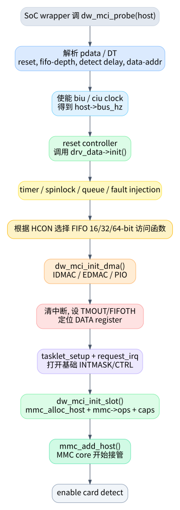

01. probe 与 host 注册
dw_mci_probe() 不是平台总线 probe 的最外层，它是
DesignWare MMC core 的公共 probe。Rockchip、Exynos 等平台 wrapper
通常负责分配 struct dw_mci、填充
dev/regs/irq/drv_data/pdata 等平台信息，然后调用这里导出的
dw_mci_probe()。该函数定义在
kernel/drivers/mmc/host/dw_mmc.c:3564，导出在
kernel/drivers/mmc/host/dw_mmc.c:3808。

1. probe 的主线
dw_mci_probe() 可以按初始化顺序拆成 8 步：
| 阶段 | 代码位置 | 做了什么 | 失败影响 |
|---|---|---|---|
| 解析平台数据 | kernel/drivers/mmc/host/dw_mmc.c:3570 |
没有 pdata 时从 DT 解析 reset、fifo-depth、detect
delay、data-addr、low power 等 |
不能获得平台数据则 probe 失败 |
| 使能时钟 | kernel/drivers/mmc/host/dw_mmc.c:3577 |
获取并 enable biu/ciu，计算
host->bus_hz |
没有 bus_hz 不能继续 |
| reset 和 SoC 初始化 | kernel/drivers/mmc/host/dw_mmc.c:3631 |
reset controller，调用 drv_data->init() |
平台初始化失败则退出 |
| 初始化 timer/lock/queue | kernel/drivers/mmc/host/dw_mmc.c:3646 |
初始化 CMD11/CTO/DTO/xfer timer，spinlock，request queue | 后续状态机依赖这些对象 |
| 选择 FIFO 访问宽度 | kernel/drivers/mmc/host/dw_mmc.c:3658 |
根据 HCON 设置 16/32/64-bit push/pull 函数 | 决定 PIO 读写函数行为 |
| reset 控制器并初始化 DMA | kernel/drivers/mmc/host/dw_mmc.c:3689 |
reset CTRL/FIFO/DMA，再 dw_mci_init_dma() |
DMA 不可用则退到 PIO |
| 配置中断/FIFO/寄存器偏移 | kernel/drivers/mmc/host/dw_mmc.c:3698 |
清中断、关中断、设 timeout、设 FIFOTH、定位 DATA register | 控制器基础运行条件 |
| 注册 tasklet、IRQ 和 slot | kernel/drivers/mmc/host/dw_mmc.c:3744 |
tasklet_setup()、devm_request_irq()、写
INTMASK/CTRL、dw_mci_init_slot() |
从此 MMC core 能看到 host |
注意一个容易忽略的顺序：tasklet 和 IRQ 在 slot 注册前已经准备好，但
mmc_add_host() 才真正把 host 暴露给 MMC core。slot
初始化入口是 dw_mci_init_slot()，定义在
kernel/drivers/mmc/host/dw_mmc.c:3144。
2.
dw_mci_init_slot() 注册给 MMC core 的内容
dw_mci_init_slot() 做的是 MMC core 能理解的那部分：
mmc_alloc_host()分配struct mmc_host和私有struct dw_mci_slot，见kernel/drivers/mmc/host/dw_mmc.c:3150。slot->host = host，host->slot = slot，把 core 的 host 和控制器对象连起来，见kernel/drivers/mmc/host/dw_mmc.c:3154到kernel/drivers/mmc/host/dw_mmc.c:3159。mmc->ops = &dw_mci_ops，这一步决定 MMC core 后续如何调用本驱动，见kernel/drivers/mmc/host/dw_mmc.c:3161。- 获取 regulator，解析通用 MMC DT 属性，合并平台 caps，设置 max
request/segment/block 限制，见
kernel/drivers/mmc/host/dw_mmc.c:3163到kernel/drivers/mmc/host/dw_mmc.c:3208。 mmc_add_host()注册 host，之后 core 可以开始 card detect、枚举和发请求，见kernel/drivers/mmc/host/dw_mmc.c:3212。- 如果开了 debugfs，创建
regs/req/state/pending_events/completed_events，见kernel/drivers/mmc/host/dw_mmc.c:3216。
3. mmc_host_ops
是外部入口表
如果把 dw_mmc.c 当作一个库，dw_mci_ops
就是它给 MMC core 的 API 表。定义从
kernel/drivers/mmc/host/dw_mmc.c:1884 开始：
| ops | 驱动函数 | 读代码时的含义 |
|---|---|---|
.request |
dw_mci_request |
核心请求入口，所有普通命令/读写最终从这里进来 |
.pre_req / .post_req |
dw_mci_pre_req / dw_mci_post_req |
DMA 预映射/释放，优化连续请求 |
.set_ios |
dw_mci_set_ios |
电源、clock、bus width、timing 配置 |
.start_signal_voltage_switch |
dw_mci_switch_voltage |
CMD11 后切 1.8V/3.3V 信号电压 |
.enable_sdio_irq / .ack_sdio_irq |
dw_mci_enable_sdio_irq /
dw_mci_ack_sdio_irq |
SDIO 中断使能和 ack |
.execute_tuning |
dw_mci_execute_tuning |
调用平台 tuning hook |
.card_busy |
dw_mci_card_busy |
读 STATUS busy bit |
因此，从 0 读这份驱动时，不要先翻所有 helper。先把
dw_mci_ops 里的入口标出来，每个入口代表一种来自 MMC core
的“外部事件”。
4. probe 后系统处于什么状态
probe 成功后：
- 控制器寄存器已经 reset，基础中断已经 unmask，见
kernel/drivers/mmc/host/dw_mmc.c:3754。 - tasklet 已绑定到
dw_mci_tasklet_func()，见kernel/drivers/mmc/host/dw_mmc.c:3744。 - IRQ handler 已绑定到
dw_mci_interrupt()，见kernel/drivers/mmc/host/dw_mmc.c:3745。 - MMC host 已通过
mmc_add_host()注册，见kernel/drivers/mmc/host/dw_mmc.c:3212。 - card detect 可能已经使能，见
kernel/drivers/mmc/host/dw_mmc.c:3789。
从这一刻开始，真正的运行时主线就是：MMC core 调
request/set_ios/...，硬件 IRQ 进
dw_mci_interrupt()，tasklet 消费事件推进请求。